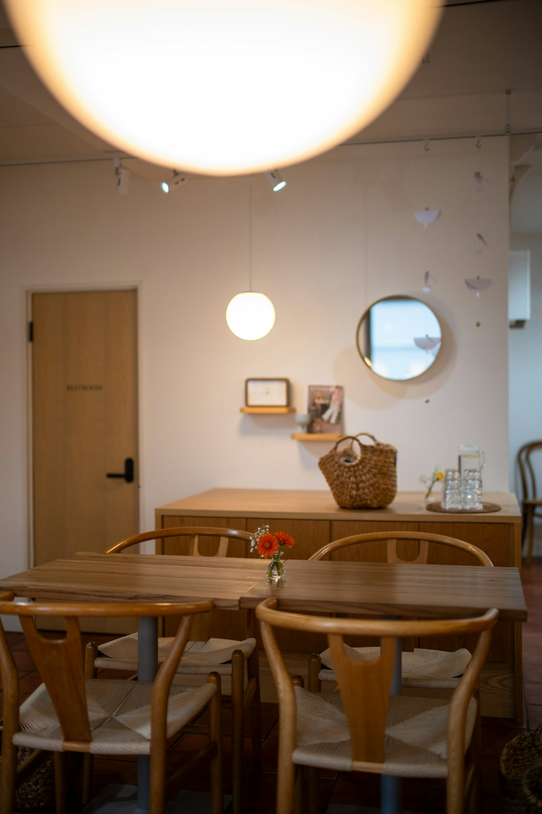

Hjortshøj
Om huset

Viruphuset
Viruphuset ligger på Virupvej 73 i Hjortshøj og drives af Fonden Multihus Hjortshøj, en erhvervsdrivende fond med almennyttigt uddelingsformål.
Ifølge listen på hvaderpaa.dk er huset på 2.500 kvadratmeter på to etager med en stor hal (spring og trampolin), fitnesscenter, en kultursal til koncerter og arrangementer og Café V. Det drives af lokalsamfundet i samarbejde med Aarhus Kommune. Se koncerterne →
Huset kan lejes til arrangementer. Priser og booking: [tjek med stedet]. Kontakt huset på info@viruphuset.dk.
Café V
Caféen i huset laver dagens ret tirsdag til torsdag og har et fast kort med blandt andet salatbowle, paneret kylling med fritter, panini og hjemmebagt kage.
Den leverer også mad og drikke til private fester og andre arrangementer i huset. Skriv til cafe@viruphuset.dk.
Strik i Viruphuset
Onsdage kl. 10–12 i Café V. Det er gratis, og man behøver ikke at tilmelde sig. Caféen har åbent og sælger blandt andet kaffe og kage.
Datoerne på stedets side: onsdage fra 18. november 2026 til og med 3. februar 2027 (der kan komme flere). Selve arrangementssiden nævner også en anden dato: [tjek med stedet].
Byens filmklub
Viruphusets forside nævner "Hjorten – Byens filmklub". Tider og priser står ikke på siden: [tjek med stedet].
Kilder: viruphuset.dk, viruphuset.dk/cafe-v/ og hvaderpaa.dk/spillested/viruphuset-hjortshoej/, hentet 17. november 2026. Billeder er eksempelbilleder fra Unsplash (gratis licens), ikke stedets egne. Arrangementer, koncerter og andet, der ikke stod der, er ikke taget med.